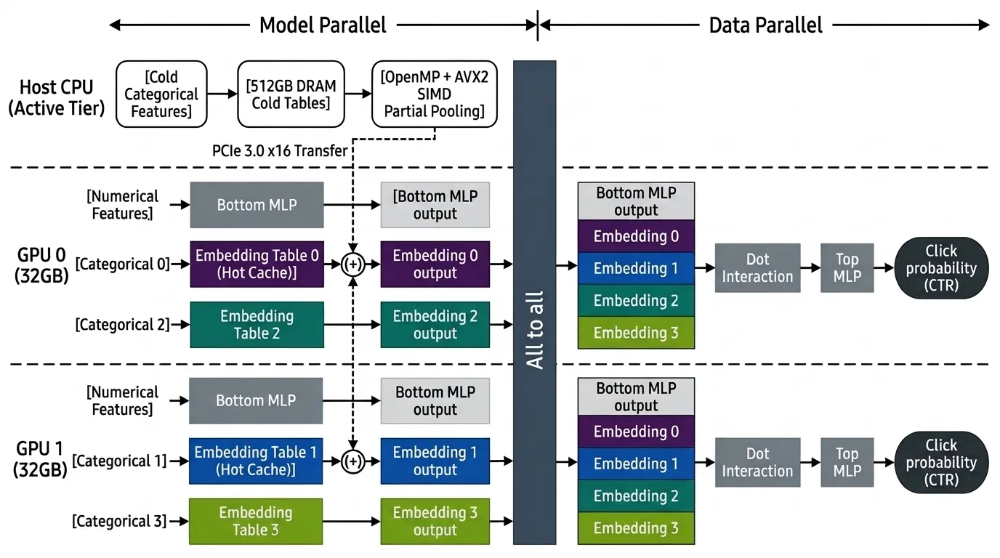

URL
Summary
We will design and evaluate an end-to-end, multi-GPU inference engine for Deep Learning Recommendation Models (DLRM) using hybrid parallelism. We shard embedding tables across multiple GPUs (model parallelism) and tier cold rows into host CPU DRAM, while replicating the dense interaction and MLP layers across GPUs (data parallelism), synchronized via an all-to-all exchange built on NCCL point-to-point primitives. We will evaluate how inference throughput scales across 1, 2, 4, and 8 GPUs under varying access skew, batch sizes, and dense compute intensities.
In addition, we use multi-threaded CPU gathering with AVX2 partial pooling to minimize PCIe transfer volume, and overlap dense computation with embedding communication across concurrent CUDA streams within each batch.
Background
A DLRM predicts the probability that a user will click an item. For each user-item pair, a bottom multilayer perceptron (MLP) transforms the numerical features into a dense vector. Each categorical feature supplies row IDs into an embedding table, and the retrieved vectors are summed into one vector per feature. The model computes pairwise dot products among the dense vector and the pooled embeddings. A top MLP uses the dense vector and these interactions to predict the click probability.
Three aspects of the problem can benefit from parallelism, explained alongside the figure below:
- Embedding lookup across tables: Lookups in one table do not depend on results from another, so the GPUs can perform them concurrently and use their combined memory bandwidth. The host CPU can also gather cold rows while the GPUs gather hot rows.
- Dense computation across samples: Each GPU runs a copy of the bottom MLP, feature interaction, and top MLP for its assigned samples. Predictions are independent across samples, so the GPUs can score different portions of the batch concurrently. The all-to-all exchange sends each pooled embedding to the GPU responsible for scoring its sample.
- Overlap between dense and embedding paths: The bottom MLP uses only numerical features, so it can run while embedding lookups, pooling, and communication are in progress. The two paths meet at the dot interaction, which needs both the bottom MLP output and all pooled embeddings for the sample.
The figure below shows a simple version of how parallelism can be exploited for this problem.

The Challenge
In DLRMs, large embedding footprints exceed individual GPU memory capacity, while inter-device and host-to-device transfers introduce communication bottlenecks across the CPU and GPU memory hierarchies. The primary system challenges are:
- Memory-bound random gathers: Each embedding lookup into GB-scale tables is very likely a cache miss with no spatial locality, so performance is dominated by GPU memory and PCIe transfer throughput.
- Data skew and load imbalance: Real-world categorical features follow power-law distributions, so work is distributed unevenly across GPUs. Every GPU must wait for the slowest one at the all-to-all barrier.
- Communication-to-computation ratio: In the all-to-all stage, each GPU must send its sharded embedding batches to the other GPUs. On PCIe-interconnected nodes, communication latency can dominate execution time.
- Global synchronization barrier: The feature interaction stage cannot start until all embeddings arrive, creating a global barrier for every batch.
System Constraints
- PCIe bottleneck: PCIe 3.0 provides roughly 12 GB/s, while the RTX 2080's GDDR6 provides 448 GB/s, so each cold row fetched across PCIe is expensive.
- Communication-to-lookup ratio in multi-GPU scaling: Speedup depends on the ratio between local lookup time and cross-GPU communication time. For features with little lookup work, communication time dominates and can cause negative speedup when scaling to more GPUs.
Resources
We will build our DLRM inference engine from scratch in C++ and CUDA and use NVIDIA's PyTorch DLRM implementation as an external performance baseline on a matching workload. We plan to use the GHC cluster for development and single-GPU tests with host memory, then use PSC for multi-GPU scaling tests. Our main hardware need is access to a single PSC node with eight GPUs so we can compare performance across 1, 2, 4, and 8 GPUs on the same machine. The eight-GPU test depends on node availability.
For datasets, we plan to use Meta's synthetic DLRM dataset and MLPerf DLRM v2 Multi-Hot Criteo to test embedding lookup and pooling performance under realistic access patterns, and the Criteo Kaggle dataset to check correctness and to see how inference scales when each categorical feature requires just one lookup.
Goals and Deliverables
Our system aims to maximize DLRM inference throughput while navigating hardware resource limits and GPU memory footprints. We will build two baselines, a multi-threaded CPU implementation (numerical ground truth) and an all-resident single-GPU engine, then add three optimizations: CPU–GPU memory tiering with OpenMP/AVX2 partial pooling, table-wise and row-wise embedding sharding across GPUs, and two-stream (dense/sparse) overlap within each batch. We will characterize their effect by varying pooling factor, data skewness, and dense compute intensity.
Plan to Achieve
- Correctness: All GPU, tiered, and multi-GPU configurations match the CPU reference within 0.01% relative error.
- CPU tier: ≥1.5× higher cold-row throughput for CPU partial pooling than for GPU zero-copy when bags have ≥4 cold IDs, since partial pooling sends one vector per bag over PCIe instead of every row.
- Multi-GPU scaling: ≥3× embedding-stage speedup from 1 to 4 V100 GPUs with table-wise sharding when L ≥ 2.25·r, where L is the pooling factor and r is the ratio of measured GPU gather bandwidth to all-to-all bandwidth, as predicted by our model Speedup = 4 / (1 + 0.75·r/L).
- Stream concurrency: Overlapping the bottom MLP with the sparse path hides ≥50% of the shorter path's time.
- Analysis: Per-stage time breakdowns for every configuration, a comparison of load balance and exchange volume between table-wise and row-wise sharding, and the MLP width at which dense compute dominates.
Hope to Achieve
- Hybrid sharding: Shard massive, skewed tables row-wise while keeping smaller tables table-wise, to combine the benefits of both strategies.
- Pre-load batch buffering: Preload the next batch while the GPU computes the current one.
- GPU count at fixed capacity: Compare "2 GPUs + CPU tier" against "4–8 GPUs with all tables in GPU memory" in throughput per GPU across skew levels.
Platform Choice
- C++: control over embedding layout in host memory
- CUDA: parallelizing GPU lookups and overlapping the bottom MLP with embedding work
- NCCL: sending pooled embeddings to the GPUs that score each sample
- GHC: single-GPU memory tiering tests
- PSC: measuring multi-GPU scaling and communication costs
Schedule
- Nov 9 – Nov 15: Set up GHC and request PSC access; prepare small Criteo and Meta test batches; build the multithreaded CPU reference and start the single-GPU CUDA baseline.
- Nov 16 – Nov 22: Finish the all-resident single-GPU baseline and validate its outputs against the CPU reference; add OpenMP and AVX2 pooling for cold rows and measure PCIe traffic with and without CPU pooling; draft the milestone report.
- Nov 23 – Nov 29: Submit the milestone report (Nov 23, 11:59 PM); validate table-wise sharding and NCCL all-to-all on two PSC GPUs.
- Nov 30 – Dec 6: Add CUDA stream overlap and compare it with serialized execution; measure throughput at 1, 2, and 4 GPUs on the same PSC node (8 GPUs if available); vary pooling factor and access skew, test a few batch sizes and MLP widths, and measure time spent in each inference stage; try row-wise sharding if the core benchmarks are complete.
- Dec 7 – Dec 10: Rerun key benchmarks and prepare scaling plots and per-stage timing charts; submit the final report (Dec 10, 11:59 PM).
- Dec 11: Poster session